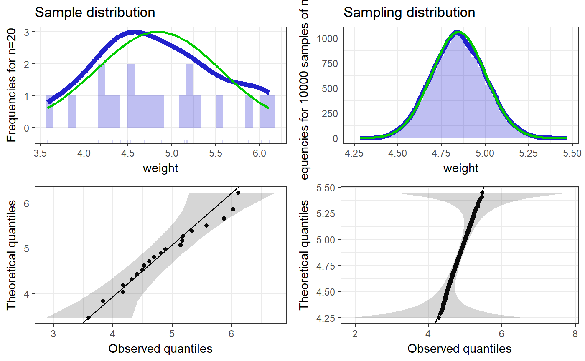
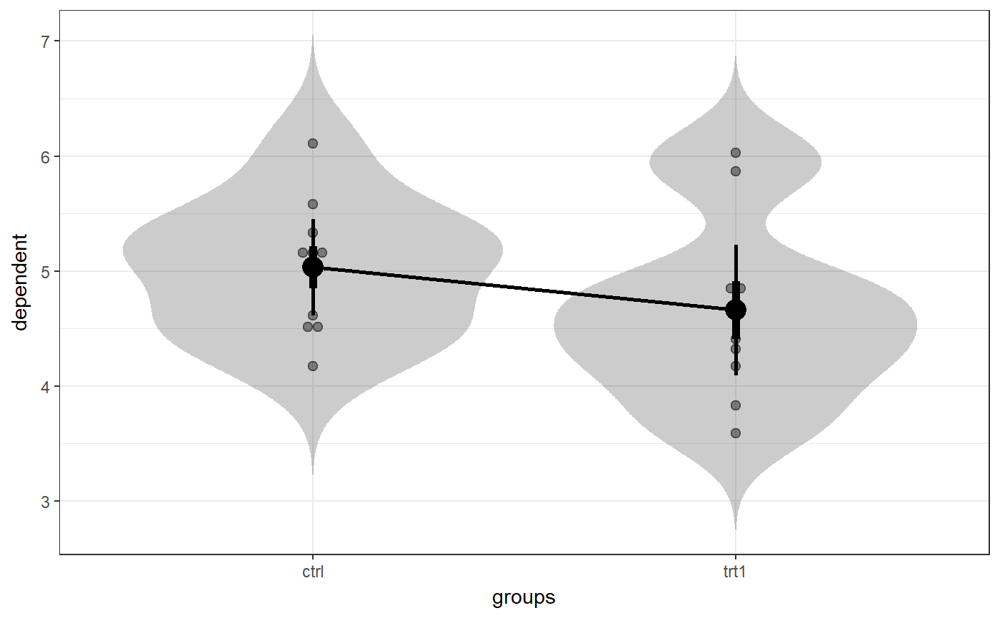
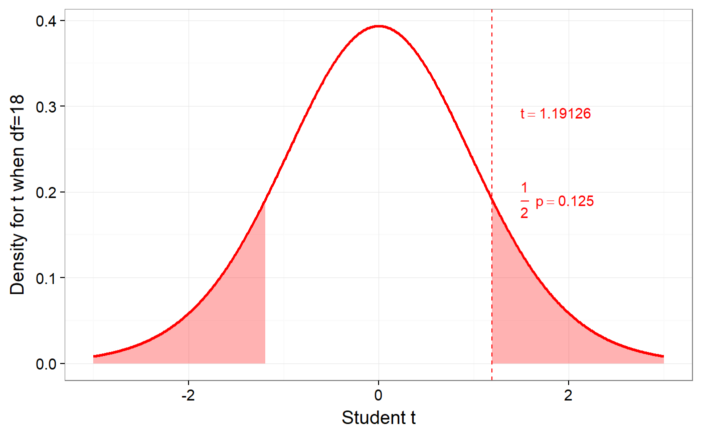
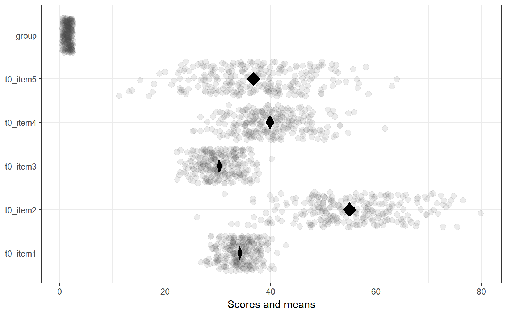
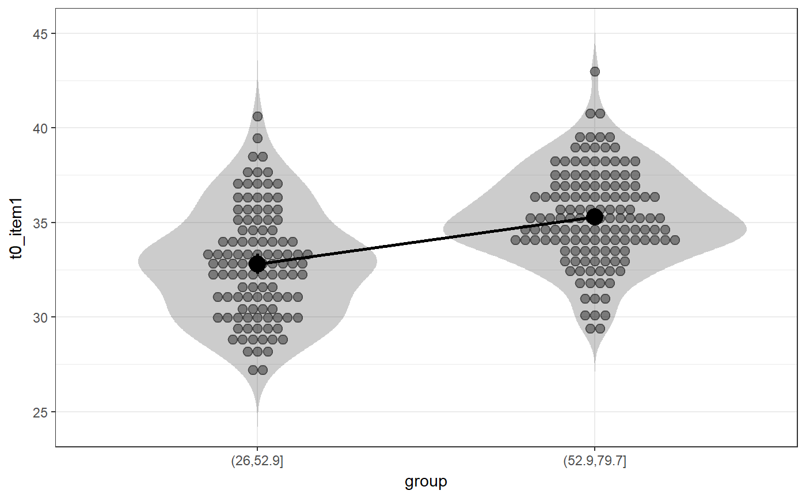
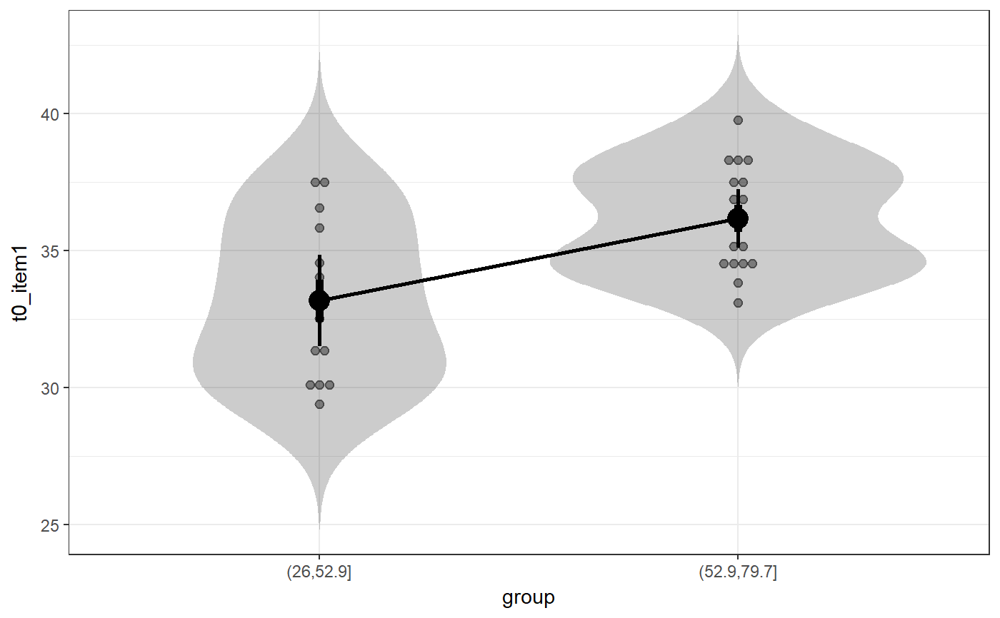

This package contains a number of functions that serve two goals. First, to make R more accessible to people migrating from SPSS by adding a number of functions that behave roughly like their SPSS equivalents (also see http://rosettastats.com). Second, to make a number of slightly more advanced functions more user friendly to relatively novice users. The package also conveniently houses a number of additional functions that are intended to increase the quality of methodology and statistics in psychology, not by offering technical solutions, but by shifting perspectives, for example towards reasoning based on sampling distributions as opposed to on point estimates.
| Package: | userfriendlyscience |
Type: |
Package |
Version: |
0.7-1 |
Date: |
2018- - |
License: |
GPL (>= 3) |
Userfriendlyscience (UFS) contains a number of functions that serve two goals. First, to make R more accessible to people migrating from SPSS by adding a number of functions that behave roughly like their SPSS equivalents (also see http://rosettastats.com for a tool that helps with this). Second, to make a number of slightly more advanced functions more user friendly to relatively novice users. The package also conveniently houses a number of additional functions that are intended to increase the quality of methodology and statistics in psychology, not by offering technical solutions, but by shifting perspectives, for example towards reasoning based on sampling distributions as opposed to on point estimates.
The package imports functions from many other packages, which is in line with its function as a 'wrapper package': UFS aims to make many existing functions easier for users coming from SPSS, so sometimes a function is added when it saves the user just some data preparing.
The package implements many solutions provided by people all over the world, most from Stack Exchange (both from Cross Validated and Stack Overflow). I credit these authors in the help pages of those functions and in the Author(s) section of this page. If you wrote a function included here, and you want me to take it out, feel free to contact me of course (also, see http://meta.stackoverflow.com/questions/319171/i-would-like-to-use-a-function-written-by-a-stack-overflow-member-in-an-r-packag).
psych and MBESS contain many useful functions
for researchers in psychology.
Peters, G.-J. Y. (2014). The alpha and the omega of scale reliability and validity: why and how to abandon Cronbach's alpha and the route towards more comprehensive assessment of scale quality. European Health Psychologist, 16(2), 56-69.
Peters, G.-J. Y. (2017). Diamond Plots: a tutorial to introduce a visualisation tool that facilitates interpretation and comparison of multiple sample estimates while respecting their inaccuracy. PsyArXiv; under review at Health Psychology Bulletin, https://doi.org/10.17605/OSF.IO/9W8YV
Peters, G.-J. Y. & Crutzen, R. (2017). Knowing exactly how effective an intervention, treatment, or manipulation is and ensuring that a study replicates: accuracy in parameter estimation as a partial solution to the replication crisis. PsyArXiv; under review at Psychology & Health http://osf.io/cjsk2/
Crutzen, R., Peters, G.-J. Y., & Noijen, J. (2017). How to Select Relevant Social-Cognitive Determinants and Use them in the Development of Behaviour Change Interventions? Confidence Interval-Based Estimation of Relevance. Frontiers in Public Health 5:165. http://dx.doi.org/10.3389/fpubh.2017.00165
Crutzen, R. (2014). Time is a jailer : what do alpha and its alternatives tell us about reliability? The European Health Psychologist, 1(2), 70-74.
Crutzen, R., & Peters, G.-J. Y. (2015). Scale quality: alpha is an inadequate estimate and factor-analytic evidence is needed first of all. Health Psychology Review. http://dx.doi.org/10.1080/17437199.2015.1124240
### Create simple dataset dat <- PlantGrowth[1:20,]; ### Remove third level from group factor dat$group <- factor(dat$group); ### Examine normality normalityAssessment(dat$weight);#> ## SAMPLE DISTRIBUTION ### #> Sample distribution of 20 observations #> Mean=4.85, median=4.75, SD=0.7, and therefore SE of the mean = 0.16 #> #> Skewness (G1): 0.23 (se = 0.51, confidence interval = [-0.77, 1.23], z = 0.45, p = .65) #> Kurtosis (G2): -0.57 (se = 0.99, confidence interval = [-2.5, 1.4], z = -0.57, p = .57) #> Hartigans' Dip Test: 0.06, p = .73 #> #> Shapiro-Wilk: p=0.82 (W=0.97; based on 20 observations) #> Anderson-Darling: p=0.87 (A=0.2) #> Kolmogorov-Smirnof: p=0 (D=1) #> #> ## SAMPLING DISTRIBUTION FOR THE MEAN ### #> Sampling distribution of 10000 samples of n=20 #> Mean=4.85, median=4.84, SD=0.15 #> #> Skewness (G1): 0.07 (se = 0.51, confidence interval = [-0.94, 1.07], z = 0.13, p = .9) #> Kurtosis (G2): -0.08 (se = 0.99, confidence interval = [-2.0, 1.9], z = -0.08, p = .94) #> Hartigans' Dip Test: 0, p = .991 #> #> Shapiro-Wilk: p=0.61 (W=1; NOTE: based on the first 5000 of 10000 observations) #> Anderson-Darling: p=0.06 (A=0.72) #> Kolmogorov-Smirnof: p=0 (D=1)#> Input variables: #> #> group (grouping variable) #> weight (dependent variable) #> Mean 1 (ctrl) = 5.03, sd = 0.58, n = 10 #> Mean 2 (trt1)= 4.66, sd = 0.79, n = 10 #> #> Independent samples t-test (tested for equal variances, p = .372, so equal variances) #> (pooled standard deviation used, 0.7) #> #> 95% confidence intervals: #> Absolute mean difference: [-0.28, 1.03] (Absolute mean difference: 0.37) #> Cohen's d for difference: [-0.36, 1.42] (Cohen's d point estimate: 0.53) #> Hedges g for difference: [-0.34, 1.36] (Hedges g point estimate: 0.51) #> #> Achieved power for d=0.53: 0.2038 (for small: 0.0708; medium: 0.1851; large: 0.3951) #> #> (secondary information (NHST): t[18] = 1.19, p = .249)### Show the t-test didacticPlot(meanDiff(dat$weight ~ dat$group)$t, statistic='t', df1=meanDiff(dat$weight ~ dat$group)$df);#> Warning: `panel.margin` is deprecated. Please use `panel.spacing` property instead#> Warning: Ignoring unknown aesthetics: x.lo, x.hi#> Warning: Ignoring unknown aesthetics: x.lo, x.hi### Load data from simulated dataset testRetestSimData (which ### satisfies essential tau-equivalence). data(testRetestSimData); ### Select some items in the first measurement exampleData <- testRetestSimData[2:6];# NOT RUN { ### Show reliabilities scaleStructure(dat=exampleData, ci=FALSE, omega.psych=FALSE, poly=FALSE); # }### Create a dichotomous variable exampleData$group <- cut(exampleData$t0_item2, 2); ### Show item distributions and means meansDiamondPlot(exampleData);#> Warning: argument is not numeric or logical: returning NA#> Warning: Calling var(x) on a factor x is deprecated and will become an error. #> Use something like 'all(duplicated(x)[-1L])' to test for a constant vector.#> Warning: argument is not numeric or logical: returning NA### show a dlvPlot with less participants, showing the confidence ### interval and standard error bars better dlvPlot(exampleData[1:30, ], x="group", y="t0_item1");